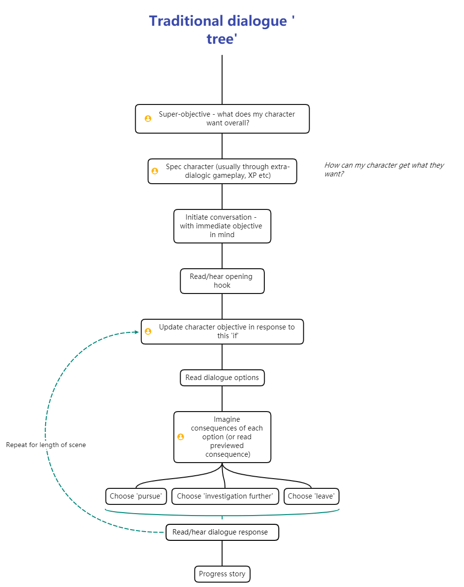
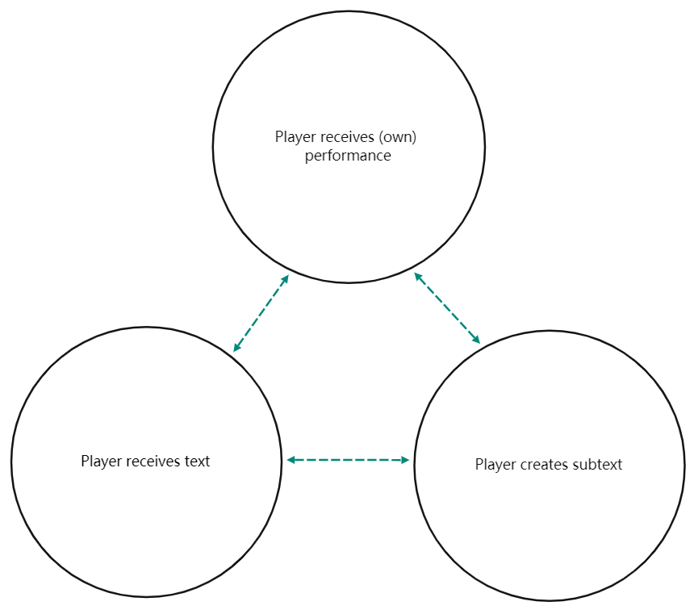
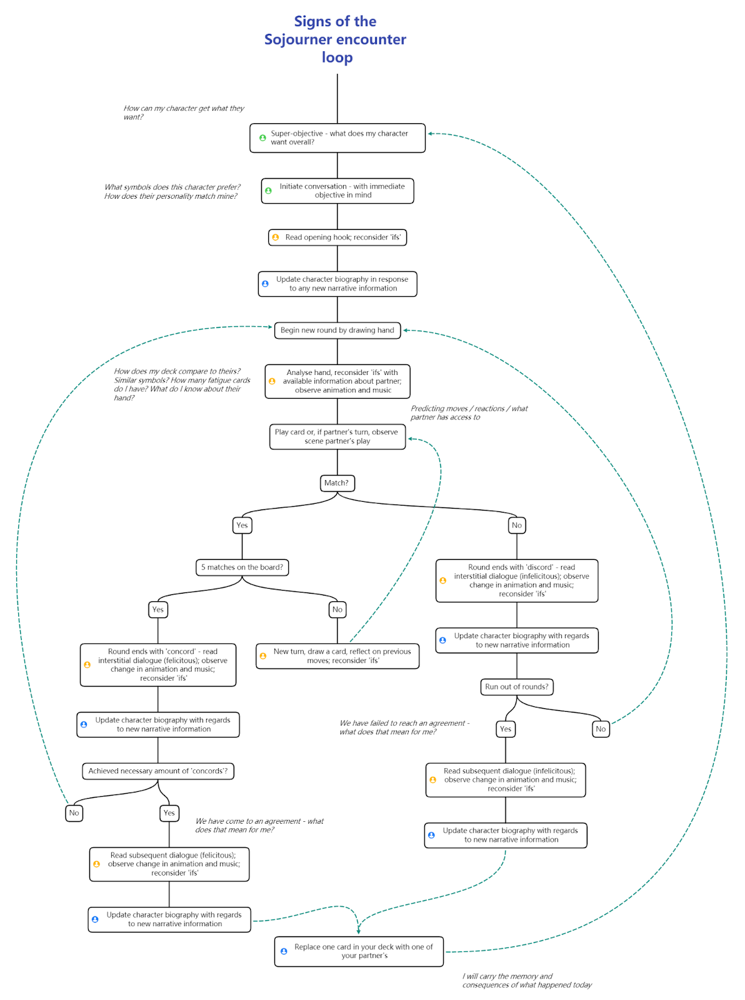
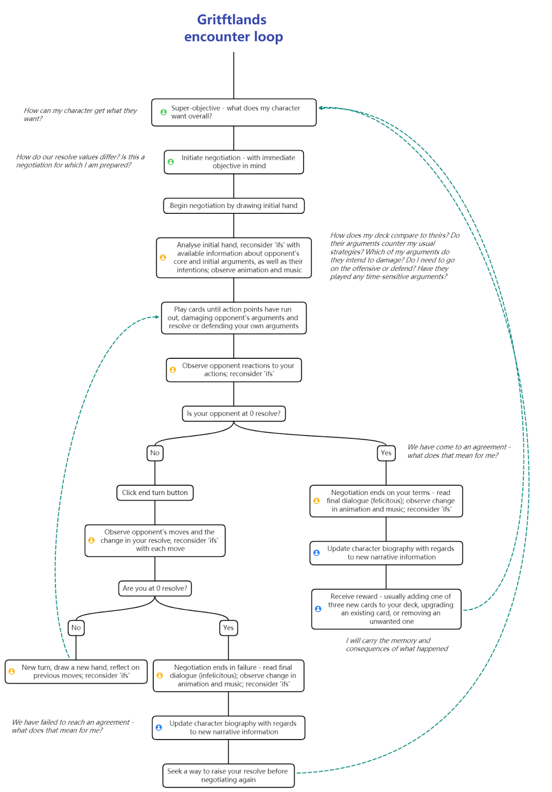

Playing Your Cards Right
A Stanislavskian Analysis of Dialogue and Player Role in Narrative Deck-Building Games
Thomas Martin
Abstract
In his 2018 response to Jon Ingold’s popular talk ‘Sparkling Dialogue,’ game designer and academic Robert Yang asserts that ‘gamers have been trained specifically to ignore subtext’ (Yang, 2018). Using the lens of Stanislavskian actor training, I theorise that in order to reacquaint players with subtext, the traditional ‘dialogue tree’ at the heart of choice-based narrative games can be reassessed in two ways. Firstly, employing a non-deterministic approach to dialogue, increasing affective involvement and narrative anticipation. Secondly, expanding gameworld time between dialogue, providing the player space to actively reflect on dramatic subtext. Both uncertainty and expanded time are key elements of card games; in pursuit of this theory I present analyses of two narrative deck-building games, Signs of the Sojourner and Griftlands.
Contents:
- Aims, Objectives & Methodology
- Literature Review
- Case Studies:
– Signs of the Sojourner
– Griftlands - Discussion
- Conclusion
- Reference List, Ludography & Bibliography
Aims, Objectives & Methodology
This paper will briefly question the prevalence of ‘choice-based dialogue trees’ in digital game design. Then, following an overview of subtext, time and uncertainty, it will provide an overview of the Stanislavskian method couched both in research and the writer’s personal experience of working as a theatre director. Finally, it will use two contemporary case studies to analyse how deck-building narrative games approach dialogue scenes, with specific reference to uncertainty and time encouraging players to behave like the ‘actor’ of the scene.
My methodology is a qualitative analysis of two primary source case studies: the narrative deck-building games Signs of the Sojourner and Griftlands. I use Calleja’s Player Involvement Model (2011) and Costikyan’s categorisations of uncertainty (2013) to expose the games’ relationships to subtext, while also mapping sites within the gameplay loops where a ‘spectacting’ player might engage in Stanislavskian techniques.
Broadly speaking, this essay aims to identify successes and failures in the considered games’ dialogue designs, and hopefully provide some design takeaways for re-addressing game dialogue.
Literature Review
Narrative Games & Dialogue
In the pursuit of narrative involvement, advances have been made in almost every field of game narrative delivery (Calleja, 2011). One notable exception, however, is in the designing and rendering of dialogue, which has remained largely unchanged since shifting from parser-based to choice-based dialogue interfaces (Murray, 1997). The Game Narrative Toolbox defines the purpose of game dialogue as ‘to keep the game moving forward’ (Heussner et al, 2015), and recommends to narrative designers the traditional ‘dialogue tree’:

Figure 1. Traditional game ‘dialogue tree’
The pervasiveness of this design has drawn its fair share of criticisms. Text-driven games are notably absent from Calleja’s case studies of emotionally affective games (2011). Jon Ingold’s talk ‘Sparkling Dialogue’ finds issue with the ‘undramatic’ state of game dialogue writing (2018). Robert Yang’s response to this talk even declares that ‘gamers have been trained specifically to ignore subtext’ (2018).
Subtext, Time & Uncertainty
- Subtext (2021): An implicit meaning or theme of a literary text,
or - The underlying personality of a dramatic character as implied or indicated by a script or text and interpreted by an actor in performance.
In games, literary subtext (‘implicit meaning’) has been covered by Ian Bogost’s theory of procedural rhetoric (2007); this paper is concerned with the dramatic subtext of game dialogue.
During theatrical rehearsals, subtext is discussed, investigated and prepared by actors, who infuse it with meaning and emotion from their own personal experiences (Stanislavski, 1937). An audience sees none of this. They intuit subtext through a ‘synthesis’ of their own hearing of the text and their interpretation of the actors’ performances (Iser, 1991). Thus, the interpretation of subtext exists in the present, but the psychological work of defining that subtext is the actor’s responsibility in the past.
Figure 2. Theatrical journey of dramatic subtext from text through actor, performance and audience
In the case of games, however, the player is a ‘spectactor’ - both audience and performer (Frasca, 2004). Are they expected to synthesise subtext at the point of its creation, to create it at the point of synthesis?

Figure 3. Player experience of game text and subtext in single moment of time
Dramatic subtext is also inherently subjective: it is both interpreted by an audience and reliant on an actor’s intentionality (Iser, 1991). The actor communicating subtext exists in a state of uncertainty (Donnellan, 2002), and as Costikyan would attest, these ‘performative uncertainties’ are cornerstones of compelling game design (2013). The ‘dialogue tree,’ however, with its boilerplate options for pursuing, leaving and investigating, has become entirely predictable; this lack of uncertainty in game dialogue is another factor in ‘training players to ignore subtext.’
Yang therefore raises the possibility that - quality of game writing aside - the time-structure and lack of uncertainty in traditional interactive dialogue prevents players from generating the subtext they need. Without these factors - or the tools of an actor to help them - a player might always feel distant from subtext.
The Work of the Actor
Stansilavskian acting technique has been applied regularly to the analysis and design of games and game stories (Tanenbaum, 2011; Fernandez-Manjon et al, 2013), and rightly so: the five core pillars of his method, as detailed in An Actor Prepares (1937), map neatly onto existing game design concepts:
| Stanislavskian technique | Definition | Game design corollary |
|---|---|---|
| Character biography | Organising facts about character through textual analysis and imagination | Alterbiography (Calleja, 2009), narrative/affective involvement (Calleja, 2011) |
| Objectives and super-objectives | Identifying both the immediate and over-arching emotional goals driving character behaviour | Player intentions (Church, 1999); narrative/ludic involvement (Calleja, 2011) |
| Units, beats and actions | Dividing the action of a play into grokkable segments | Levels / scenes, encounters, player actions (Lankowski et al, 2015); ludic involvement (Calleja, 2011) |
| Sense- / emotion-memory | Attaching memories of real experiences to sensory triggers (including lines) | Kinesthetic/affective involvement (Calleja, 2011) |
| The magic ‘if’ | Considering how a character would act, given all of the above | Player uncertainty, randomness, narrative anticipation (Costikyan, 2013) |
Table 1. Connecting Stanislavskian techniques to game design concepts
These techniques help an actor identify, develop and communicate dramatic subtext; Stanislavski calls this ‘unconscious creativity through conscious technique’ (1937). I can think of few better cross-disciplinary definitions for gameplay, and it is my contention that a gameplay-focused - and in the case of this paper, a card-game-based - approach to dialogue can provide the ‘spectactor’ with both the time and the uncertainty to employ such ‘conscious technique.’
Case Studies
Signs of the Sojourner

Figure 4. Signs of the Sojourner conversation loop (Stanislavskian engagement points in green, blue and
yellow)
Involvement Analysis
| Involvement Aspect | Analysis |
|---|---|
| Spatial | The scene setup gives the impression of a ‘real-life’ card game, with you facing your partner. This focuses attention on their animated reactions, for greater affective involvement. A sense of exploration at the game-wide level increases narrative involvement. |
| Kinaesthetic | Card selection and placement is smooth and pleasurable, with animated feedback for matching runs; controls are accessible, with (on average) fewer than 2 physical actions needed to complete a turn. |
| Ludic | Actions have a clear impact on the game state, often followed by changes in sound design and partner animation; progression towards the ludic/narrative goal is made with each action, clarified through UI ‘pips’ representing ‘concord’ and ‘discord’. |
| Shared | Cooperative involvement with other game agents in conversational settings leads to a heightened sense of shared involvement. |
| Narrative | Encounters are unrepeatable, the number of steps on a journey is limited, as are the number of journeys (5 ‘act’ structure), leading to a sense of dramatic progression; encounters are bookended with narrative information (often relevant to your character biography), and relationship commentary is provided mid-encounter. Characters recur, and remember past encounters. |
| Affective | Lots: clear communication of dramatic stakes, partner’s animated reactions, responsive musical score; deck-building involves emotional memory, as you replace one card with one of your partner’s after every encounter regardless of outcome; affective involvement is directly encouraged by the game description (a game about ‘making connections and building relationships[…] Your deck is a representation of you and how you communicate, and the goal of an interaction [is] to build a connection and communicate…’) |
Uncertainty Analysis
| Uncertainty Aspect | Analysis |
|---|---|
| Performative uncertainty | Avoided for the most part; actions fulfil their expected function. |
| Player uncertainty | Rules are simple (match symbols left to right) with the few special cards heavily tutorialised; failure does not halt progression, is built into the theme and narrative, and is unavoidable in many cases due to limited options. |
| Solver’s uncertainty | Medium; player actions are limited to five choices, each with a binary result, but by thinking ahead and gaining information about your partner’s hand you can plan more creative ‘solves’ to the matching problems; deck-building itself is a puzzle-like endeavour, though limited to replacing one card at a time. |
| Randomness | Satisfying, dynamic implementation (you draw a card in your first hand 50% of the time, and will likely see >75% of your deck per round - until you start accumulating fatigue cards, which change shuffling distribution). |
| Analytic complexity | Relatively low per-encounter (4 main symbols to match; deck limited to 10 chosen cards); medium complex in a game-wide context (5th symbol introduced later; fatigue cards build up and symbols diversify, leading to less predictable encounters). |
| Hidden information | Used sparingly but effectively; without an ‘observe’ card, your partner’s hand is always hidden, but you are made aware of the symbols in their deck before beginning an encounter. |
| Narrative anticipation | The time structure helps build narrative anticipation, as does the fact that reaching concordance with characters depends on performance. The writing supports narrative uncertainty, defining the emotional state of your partner and the thing they want to agree upon with you, but the dramatic subtext of the conversation is abstracted into card mechanics, and does not always proceed as expected. |
Griftlands

Figure 5. Griftlands negotiation loop (Stanislavskian engagement points in green, blue and yellow)
Involvement Analysis
| Involvement Aspect | Analysis |
|---|---|
| Spatial | Encounters are presented in the third person, with an animated player character ‘in conversation’ with your opponent; observing your own avatar’s reactions increases narrative involvement, but perhaps lessens the sense of incorporation. A slight sense of exploration is achieved at the game-wide level, which increases narrative involvement. |
| Kinaesthetic | Controls are compelling and accessible; fewer than 3 clicks on average to affect most actions; feedback is stylish, immediate and involving. |
| Ludic | most elements are directed towards ludic involvement. Actions have a clear impact on the game state, with numerical consequences previewed before action is taken. Progress towards the ludic/narrative goal, represented by the integer state of player and opponent resolve, is clear. |
| Shared | Negotiation encounters are locked to quest-specific NPCs, so the sense of social interaction with agents in the world feels limited; negotiations are competitive-only affairs. |
| Narrative | Narrative progression bookends each encounter, with choice-less dialogue ‘scenes’ playing out depending on a victory or a loss; though player and opponent are expressively designed and animated, the integer representation of ‘resolve’ as the only indicator of in-encounter narrative progression leaves little room for nuance within negotiations. Characters recur, though, and develop ‘relationship statuses’ towards the player. |
| Affective | Despite the explicitly emotive naming conventions of cards (describing various conversational ‘moves’), encounters mostly involve the player at the affective levels of tension and suspense. |
Uncertainty Analysis
| Uncertainty Aspect | Analysis |
|---|---|
| Performative uncertainty | Fairly low; misclicking is possible but unlikely, actions fulfil their expected functions. |
| Player uncertainty | Medium; new cards with unique mechanics constantly introduced, opponents have access to unique, often unpredictable ‘arguments’ and abilities; resource-based gameplay makes indecision more likely. Failure is a significant barrier event, rendering the player unable to negotiate until they have refilled their ‘resolve’. |
| Solver’s uncertainty | Low in-encounter (numbers go up, numbers go down); high when considering deck-building possibilities (winning, buying and removing cards, no upper deck limit). |
| Randomness | Highly dependent on deck size, but the length of matches means previously played cards are reshuffled into a new deck, increasing randomness exponentially over time. |
| Analytic complexity | Relatively high; players need to balance tactical considerations like resource management, offense, defense and time-sensitive opponent actions; the number of game-available cards and opponent abilities is almost ungrokkably high, such that a wiki or guide is handy for optimal deck-building. |
| Hidden information | Low; players usually have perfect information about an opponent’s ‘intent’ for the next turn. |
| Narrative anticipation | Often lost mid-encounter; dialogue is only meaningfully progressed post-encounter, in predetermined dialogue ‘scenes’; in-encounter procedural barks quickly become repetitive. |
Discussion
Both games abstractify the dialogic process into gameplay, with components and actions named after rhetorical concepts; both encourage subtextual reflection through their expansive, turn-based gameworld time.
Signs of the Sojourner’s uncertainty extends to the ‘meaning’ of its cards, which (unlike Griftlands’ explanation-heavy components) display only symbols. This affects the player’s subtextual reading of each encounter: for some, the cards stand for lines in a script; for others, unvoiced gestures or meaningful looks. A particular success of this game is how often it allows the player to update their character biographies with new narrative information (≅3 times/encounter) and reconsider their ‘ifs’ thanks to imperfect information (⪆10 times/encounter). Indeed, it is this lack of perfect information and the game’s sense of collaborative social involvement that renders it so non-deterministic, subjective and subtextually rich.
Griftlands crowbars even more playspace between its dialogue, with encounters lasting upwards of 5 minutes. However, the changes to character biography and ‘ifs’ are almost always minor: little new narrative information is introduced beyond a change in player and opponent ‘resolve.’ To combat this undynamic time-expanse, the game asks the player to invest in complex tactics over emotional interpretation. Its generally perfect approach to information also reduces subtextual complexity. It’s a neat representation of how dialogue can work combatively; as a subtextual experience, it lacks affect.
Takeaways:
- Turn-based structures allow the player time for imaginative reflection, provided they are not swamped with complex gameplay. Simplifying systems reduces cognitive friction.
- The illusion of social involvement is key; while players are often keen to view their own avatar ‘expressing,’ I contend that privileging agent expression leads to more subtextually engaged play, as in Signs of the Sojourner.
- The more often a player questions their immediate objectives and feels uncertain of their progress, the more they will become affectively involved.
- An imperfect approach to information leads to more dynamic reassessing of both character biography and player ‘ifs.’
- Dialogic gameplay can boost narrative involvement through the deepening of character biography. Allow players the space to digest new facts they learn about themselves and the world, and reconsider their ‘ifs’ before proceeding.
- Advances in dialogue design will only be possible through a holistic combination of all game design elements, not just narrative and gameplay. Animation and sound are key considerations.
Conclusion
While in the field of game design, true dialogic experimentation is still in its infancy, narrative card games show us how minor reassessments of time signature and determinism in dialogue systems can have affective and narratively involving results. Narrative designer Emily Short, in a talk given to the Writer’s Guild of Great Britain (2021), said: ‘the emotional gap is [found] in the moment of choice.’ I believe that the more time we can inject into that moment, and the more unpredictable we can make it feel, the more players will naturally come to escape through that gap, ‘out of the world of actuality, into the world of imagination’ (Stanislavski, 1937).
Reference List
Bogost, I. (2007) Persuasive Games: The Expressive Power of Videogames. Cambridge, Massachusett: MIT Press.
Calleja, G. (2009) ‘Experiential Narrative in Game Environments.’ DiGRA 2009 Conference Proceedings: Breaking New Ground: Innovation in Games, Play, Practice and Theory.
Calleja, G. (2011) ‘Emotional involvement in digital games.’ International Journal of Arts and Technology. 4. pp 19 - 32.
Church, D. (1999) Formal Abstract Design Tools. <https://www.gamasutra.com/view/feature/131764/formal_abstract_design_tools.php> (Accessed May 25, 2021).
Costikyan, G. (2013) Uncertainty in Games. Cambridge, Massachusett: MIT Press.
Donnellan, D. (2002) The Actor and the Target. London: Nick Hern Books.
Echodog Games (2020) Signs of the Sojourner [Video game]. Echodog Games.
Klei Entertainment (2021) Griftlands [Video game]. Klei Entertainment.
Ingold, J. (2018) Sparkling Dialogue: A Masterclass. 1 December 2018. <https://www.youtube.com/watch?v=_vRfNtvFVRo> (Accessed March 10th 2021).
Iser, W. (1991) The act of reading: A theory of aesthetic response. Baltimore: Johns Hopkins Univ. Press.
Fernandez-Manjon, B., Fernandez-Vara, C., & Manero, B. (2013) ‘Stanislavky’s System as a Game Design Method: A Case Study.’ DiGRA 2013 Conference Proceedings: DeFragging Games Studios.
Frasca, G. (2004). ‘Videogames of the Oppressed: Critical Thinking, Education Tolerance, and Other Trivial Issues.’ In N. Wardrip-Fruin & P. Harrigan (Eds.), First Person: New Media as Story, Performance, and Game. Cambridge, MA: MIT Press.
Heussner, T., Finley, T., Hepler, J. & Lemay, A. (2015) The Game Narrative Toolbox. London: Routledge.
Lankoski, P. & Bjork, S. (2015) ‘Formal analysis of gameplay in Game Research Methods. ’ In Lankoski, P. & Bjork, S. (Eds.), Game Research Methods.
Murray, J. (1997) Hamlet on the Holodeck: the Future of Narrative in Cyberspace. New York: Free Press.
Stanislavski, C. (1937) An Actor Prepares. Translated by Hapgood, E. London: Methuen Drama.
‘Subtext’ (2021) <https://www.ahdictionary.com/word/search.html?q=subtext> (Accessed 15 June, 2021).
Tanenbaum, J. (2011). ‘Being in the Story: Readerly Pleasure, Acting Theory, and Performing a Role.’ In Si, M., Thue, D., André, E., Lester, J., Tanenbaum, J. & Zammitto, V. (Eds.), Interactive Storytelling (Vol. 7069, pp. 55-66): Springer Berlin / Heidelberg.
Writer’s Guild of Great Britain (2021) Creating narrative in procedural worlds – writing narrative with and for procedural generation. <https://www.youtube.com/watch?v=JZ8PzeB7k0s> (Accessed 14 May, 2021).
Yang, R. (2018) Notes on “Sparkling Dialogue”, a great narrative design / game writing talk by Jon Ingold at AdventureX 2018. <https://www.blog.radiator.debacle.us/2018/11/notes-on-sparking-dialogue-great.html?m=1> (Accessed 31 May, 2021).
Ludography
Dim Bulb Games & Serenity Forge (2018). Where The Water Tastes Like Wine [Video game]. Good Shepherd Entertainment & Serenity Forge.
Failbetter Games (2010). Fallen London [Video game]. Failbetter Games.
Nerial (2016). Reigns [Video game]. Devolver Digital.
Nerial (2017) Reigns: Her Majesty [Video game]. Devolver Digital.
Night School Studio (2016). Oxenfree [Video game]. Night School Studio.
Weather Factory (2018). Cultist Simulator [Video game]. Humble Bundle.
ZA/UM (2019). Disco Elysium [Video game]. ZA/UM.
Bibliography
Card Symbols and Mechanics (2020) <https://signs-of-the-sojourner.fandom.com/wiki/Card_Symbols_and_Mechanics> (Accessed 19 June, 2021)
Chatman, S. (1995) Story and Discourse: Narrative Structure in Fiction and Film. Ithaca: Cornell University Press.
Echodog Games (2019) What’s a Narrative Card Game Anyway. <https://www.echodoggames.com/blog/2019/04/19/what-s-a-narrative-card-game-anyway> (Accessed 19 June, 2021)
Echodog Games (2019) Prototyping New Features in Signs of the Sojourner. <https://www.echodoggames.com/blog/2019/10/14/prototyping-new-features-in-signs-of-the-sojourner> (Accessed 19 June, 2021)
Fernandex Vara, C. (2009). “Play’s the Thing: A Framework to Study Videogames as Performance,” presented at the Breaking New Ground: Innovation in Games, Play, Practice and Theory: International Digital Games Research Association (DiGRA) Conference, Brunel University, West London.
Fernández-Vara, C. (2014). Introduction to game analysis. New York: Routledge.
Juul, J. (2007). ‘A certain level of abstraction. Situated play.’ DiGRA 2007 conference proceedings (pp. 510–515). Citeseer.
Laurel, B. (1993). Computers as Theatre. Boston, MA: Addison-Wesley Longman Publishing Co., Inc.
Lindley, C. (2004) Narrative, Game Play, and Alternative Time Structures for Virtual Environments. Springer.
Mateas, M. (2004). A Preliminary Poetics for Interactive Drama and Games. In N. Wardrip-Fruin& P. Harrigan (Eds.), First Person: New Media As Story, Performance, and Game (Vol. 1, pp. 19-33). Cambridge, Massachusetts; London, England: The MIT Press.
Negotiation (2021) <https://griftlands.fandom.com/wiki/Negotiation> (Accessed 19 June, 2021)
Perron, B. & Schroter, F. (2016) Video Games and the Mind: Essays on Cognition, Affect and Emotion. North Carolina: McFarland.
Ryan, M. (2001) Narrative as virtual reality: immersion and interactivity in literature and electronic media. Baltimore: Johns Hopkins University.
Schechner, R. (2006) Performance Studies. London: Routledge.